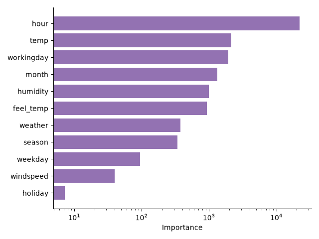
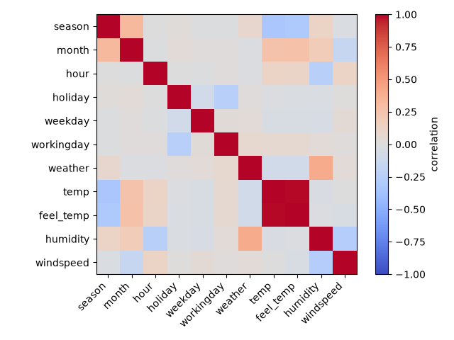

Note
Go to the end to download the full example code.
Shapley Additive Global Importance (SAGE) example#
In this example, we demonstrate how to measure feature importance using SAGE Covert et al.[1] on the diabetes dataset. Read more in the User Guide. For this example, we use the marginal version of SAGE, which limits the computational cost. To further reduce the computational cost, Shapley values are estimated using a Monte Carlo approximation. Only a subset of all possible feature coalitions is sampled. This is controlled by the n_subsets parameter. Finally, the expectation over the marginal distribution is also approximated using n_permutations.
LightGBM example on the bike sharing dataset#
We demonstrate how to use SAGE on the bike sharing dataset. We fit a LightGBM model and compute its \(R^2\) score on a held-out test set.
import numpy as np
from sklearn.datasets import fetch_openml
from sklearn.ensemble import HistGradientBoostingRegressor
from sklearn.metrics import r2_score
from sklearn.model_selection import train_test_split
from sklearn.preprocessing import OrdinalEncoder
bike_sharing = fetch_openml("Bike_Sharing_Demand", version=2, as_frame=True)
df = bike_sharing.frame
df = df[df["year"] == 0].drop(columns=["year"])
X = df.drop(columns=["count"]).to_numpy()
X = OrdinalEncoder().fit_transform(X)
y = df["count"].to_numpy()
X_train, X_test, y_train, y_test = train_test_split(X, y, random_state=0)
model = HistGradientBoostingRegressor(random_state=0, max_depth=5)
model.fit(X_train, y_train)
y_pred = model.predict(X_test)
print("R2 score:", r2_score(y_test, y_pred))
R2 score: 0.9283833661677658
SAGE feature importance#
We compute the SAGE feature importance for the fitted model. To keep the computational cost tractable, we use a subset of the test set to compute the SAGE values. Finally, the SAGE values are plotted using the plot_importance function.
import matplotlib.pyplot as plt
from hidimstat import SAGE
sage = SAGE(
model,
n_subsets=512,
n_permutations=10,
random_state=0,
n_jobs=8,
)
sage.fit(X_train)
subsample_size = 1024
rng = np.random.default_rng(0)
subsample_ids = rng.choice(len(X_test), size=subsample_size, replace=False)
sage.importance(X_test[subsample_ids], y_test[subsample_ids])
ax = sage.plot_importance(
feature_names=df.drop(columns=["count"]).columns.tolist(),
color="tab:purple",
)
ax.semilogx()
plt.tight_layout()
plt.show()

0%| | 0/1925 [00:00<?, ?it/s]
1%| | 16/1925 [00:04<08:28, 3.75it/s]
1%| | 24/1925 [00:04<05:51, 5.40it/s]
2%|▏ | 32/1925 [00:05<04:00, 7.87it/s]
2%|▏ | 40/1925 [00:05<02:51, 11.00it/s]
2%|▏ | 48/1925 [00:05<02:08, 14.63it/s]
3%|▎ | 56/1925 [00:05<01:40, 18.53it/s]
3%|▎ | 64/1925 [00:05<01:19, 23.37it/s]
4%|▎ | 72/1925 [00:05<01:08, 26.90it/s]
4%|▍ | 80/1925 [00:06<01:00, 30.62it/s]
5%|▍ | 88/1925 [00:06<00:56, 32.32it/s]
5%|▍ | 96/1925 [00:06<00:50, 35.95it/s]
5%|▌ | 104/1925 [00:06<00:46, 39.15it/s]
6%|▌ | 112/1925 [00:06<00:49, 36.68it/s]
6%|▌ | 120/1925 [00:07<00:44, 40.59it/s]
7%|▋ | 128/1925 [00:07<00:46, 38.76it/s]
7%|▋ | 136/1925 [00:07<00:44, 40.58it/s]
7%|▋ | 144/1925 [00:07<00:42, 41.87it/s]
8%|▊ | 152/1925 [00:07<00:42, 41.40it/s]
8%|▊ | 160/1925 [00:08<00:40, 43.23it/s]
9%|▊ | 168/1925 [00:08<00:41, 41.98it/s]
9%|▉ | 176/1925 [00:08<00:41, 41.70it/s]
10%|▉ | 184/1925 [00:08<00:42, 41.23it/s]
10%|▉ | 192/1925 [00:08<00:42, 41.19it/s]
10%|█ | 200/1925 [00:09<00:42, 40.71it/s]
11%|█ | 208/1925 [00:09<00:42, 40.74it/s]
11%|█ | 216/1925 [00:09<00:39, 42.96it/s]
12%|█▏ | 224/1925 [00:09<00:42, 39.79it/s]
12%|█▏ | 232/1925 [00:09<00:40, 41.50it/s]
12%|█▏ | 240/1925 [00:09<00:39, 42.52it/s]
13%|█▎ | 248/1925 [00:10<00:40, 41.71it/s]
13%|█▎ | 256/1925 [00:10<00:40, 41.41it/s]
14%|█▎ | 264/1925 [00:10<00:38, 42.86it/s]
14%|█▍ | 272/1925 [00:10<00:38, 42.53it/s]
15%|█▍ | 280/1925 [00:10<00:37, 43.72it/s]
15%|█▍ | 288/1925 [00:11<00:40, 40.67it/s]
15%|█▌ | 296/1925 [00:11<00:38, 42.62it/s]
16%|█▌ | 304/1925 [00:11<00:39, 40.64it/s]
16%|█▌ | 312/1925 [00:11<00:38, 41.60it/s]
17%|█▋ | 320/1925 [00:11<00:38, 42.01it/s]
17%|█▋ | 328/1925 [00:12<00:38, 41.69it/s]
17%|█▋ | 336/1925 [00:12<00:36, 43.84it/s]
18%|█▊ | 344/1925 [00:12<00:39, 40.49it/s]
18%|█▊ | 352/1925 [00:12<00:35, 44.65it/s]
19%|█▊ | 360/1925 [00:12<00:35, 43.97it/s]
19%|█▉ | 368/1925 [00:13<00:36, 42.78it/s]
20%|█▉ | 376/1925 [00:13<00:36, 42.91it/s]
20%|█▉ | 384/1925 [00:13<00:36, 42.38it/s]
20%|██ | 392/1925 [00:13<00:36, 42.29it/s]
21%|██ | 400/1925 [00:13<00:35, 42.64it/s]
21%|██ | 408/1925 [00:13<00:37, 40.79it/s]
22%|██▏ | 416/1925 [00:14<00:37, 40.65it/s]
22%|██▏ | 424/1925 [00:14<00:37, 40.31it/s]
22%|██▏ | 432/1925 [00:14<00:37, 39.69it/s]
23%|██▎ | 440/1925 [00:14<00:37, 40.08it/s]
23%|██▎ | 448/1925 [00:14<00:35, 42.16it/s]
24%|██▎ | 456/1925 [00:15<00:35, 41.59it/s]
24%|██▍ | 464/1925 [00:15<00:34, 42.02it/s]
25%|██▍ | 472/1925 [00:15<00:35, 41.37it/s]
25%|██▍ | 480/1925 [00:15<00:32, 44.73it/s]
25%|██▌ | 488/1925 [00:15<00:33, 42.56it/s]
26%|██▌ | 496/1925 [00:16<00:34, 42.03it/s]
26%|██▌ | 504/1925 [00:16<00:34, 41.73it/s]
27%|██▋ | 512/1925 [00:16<00:35, 40.22it/s]
27%|██▋ | 520/1925 [00:16<00:34, 40.72it/s]
27%|██▋ | 528/1925 [00:16<00:33, 41.24it/s]
28%|██▊ | 536/1925 [00:17<00:32, 42.48it/s]
28%|██▊ | 544/1925 [00:17<00:32, 42.84it/s]
29%|██▊ | 552/1925 [00:17<00:31, 43.06it/s]
29%|██▉ | 560/1925 [00:17<00:33, 41.03it/s]
30%|██▉ | 568/1925 [00:17<00:31, 42.90it/s]
30%|██▉ | 576/1925 [00:17<00:31, 42.98it/s]
30%|███ | 584/1925 [00:18<00:31, 42.53it/s]
31%|███ | 592/1925 [00:18<00:30, 43.85it/s]
31%|███ | 600/1925 [00:18<00:31, 42.71it/s]
32%|███▏ | 608/1925 [00:18<00:30, 42.70it/s]
32%|███▏ | 616/1925 [00:18<00:29, 44.47it/s]
32%|███▏ | 624/1925 [00:19<00:30, 43.36it/s]
33%|███▎ | 632/1925 [00:19<00:29, 44.36it/s]
33%|███▎ | 640/1925 [00:19<00:30, 42.38it/s]
34%|███▎ | 648/1925 [00:19<00:29, 42.76it/s]
34%|███▍ | 656/1925 [00:19<00:29, 43.46it/s]
34%|███▍ | 664/1925 [00:20<00:30, 42.01it/s]
35%|███▍ | 672/1925 [00:20<00:30, 41.73it/s]
35%|███▌ | 680/1925 [00:20<00:28, 43.06it/s]
36%|███▌ | 688/1925 [00:20<00:27, 44.27it/s]
36%|███▌ | 696/1925 [00:20<00:27, 44.75it/s]
37%|███▋ | 704/1925 [00:20<00:27, 44.30it/s]
37%|███▋ | 712/1925 [00:21<00:26, 45.78it/s]
37%|███▋ | 720/1925 [00:21<00:26, 45.00it/s]
38%|███▊ | 728/1925 [00:21<00:26, 44.79it/s]
38%|███▊ | 736/1925 [00:21<00:26, 44.47it/s]
39%|███▊ | 744/1925 [00:21<00:27, 43.68it/s]
39%|███▉ | 752/1925 [00:21<00:26, 44.44it/s]
39%|███▉ | 760/1925 [00:22<00:26, 44.43it/s]
40%|███▉ | 768/1925 [00:22<00:26, 43.94it/s]
40%|████ | 776/1925 [00:22<00:25, 44.55it/s]
41%|████ | 784/1925 [00:22<00:24, 45.69it/s]
41%|████ | 792/1925 [00:22<00:25, 44.11it/s]
42%|████▏ | 800/1925 [00:23<00:25, 43.52it/s]
42%|████▏ | 808/1925 [00:23<00:25, 43.00it/s]
42%|████▏ | 816/1925 [00:23<00:24, 44.59it/s]
43%|████▎ | 824/1925 [00:23<00:23, 46.28it/s]
43%|████▎ | 832/1925 [00:23<00:23, 45.82it/s]
44%|████▎ | 840/1925 [00:23<00:24, 44.65it/s]
44%|████▍ | 848/1925 [00:24<00:25, 42.07it/s]
44%|████▍ | 856/1925 [00:24<00:25, 41.98it/s]
45%|████▍ | 864/1925 [00:24<00:25, 41.15it/s]
45%|████▌ | 872/1925 [00:24<00:24, 42.71it/s]
46%|████▌ | 880/1925 [00:24<00:24, 43.21it/s]
46%|████▌ | 888/1925 [00:25<00:23, 44.27it/s]
47%|████▋ | 896/1925 [00:25<00:23, 43.83it/s]
47%|████▋ | 904/1925 [00:25<00:22, 45.11it/s]
47%|████▋ | 912/1925 [00:25<00:23, 43.55it/s]
48%|████▊ | 920/1925 [00:25<00:21, 46.05it/s]
48%|████▊ | 928/1925 [00:26<00:22, 43.55it/s]
49%|████▊ | 936/1925 [00:26<00:22, 43.78it/s]
49%|████▉ | 944/1925 [00:26<00:22, 42.89it/s]
49%|████▉ | 952/1925 [00:26<00:23, 42.26it/s]
50%|████▉ | 960/1925 [00:26<00:21, 43.98it/s]
50%|█████ | 968/1925 [00:26<00:22, 42.99it/s]
51%|█████ | 976/1925 [00:27<00:22, 41.60it/s]
51%|█████ | 984/1925 [00:27<00:22, 42.32it/s]
52%|█████▏ | 992/1925 [00:27<00:21, 44.32it/s]
52%|█████▏ | 1000/1925 [00:27<00:21, 43.90it/s]
52%|█████▏ | 1008/1925 [00:27<00:21, 43.51it/s]
53%|█████▎ | 1016/1925 [00:28<00:20, 44.26it/s]
53%|█████▎ | 1024/1925 [00:28<00:22, 40.70it/s]
54%|█████▎ | 1032/1925 [00:28<00:22, 39.90it/s]
54%|█████▍ | 1040/1925 [00:28<00:22, 40.09it/s]
54%|█████▍ | 1048/1925 [00:28<00:21, 40.60it/s]
55%|█████▍ | 1056/1925 [00:29<00:21, 40.57it/s]
55%|█████▌ | 1064/1925 [00:29<00:21, 40.14it/s]
56%|█████▌ | 1072/1925 [00:29<00:20, 42.09it/s]
56%|█████▌ | 1080/1925 [00:29<00:19, 43.35it/s]
57%|█████▋ | 1088/1925 [00:29<00:19, 42.33it/s]
57%|█████▋ | 1096/1925 [00:29<00:19, 42.23it/s]
57%|█████▋ | 1104/1925 [00:30<00:19, 42.43it/s]
58%|█████▊ | 1112/1925 [00:30<00:19, 41.63it/s]
58%|█████▊ | 1120/1925 [00:30<00:19, 41.73it/s]
59%|█████▊ | 1128/1925 [00:30<00:19, 41.73it/s]
59%|█████▉ | 1136/1925 [00:30<00:19, 41.51it/s]
59%|█████▉ | 1144/1925 [00:31<00:18, 42.91it/s]
60%|█████▉ | 1152/1925 [00:31<00:18, 42.29it/s]
60%|██████ | 1160/1925 [00:31<00:18, 41.20it/s]
61%|██████ | 1168/1925 [00:31<00:17, 43.80it/s]
61%|██████ | 1176/1925 [00:31<00:17, 42.67it/s]
62%|██████▏ | 1184/1925 [00:32<00:16, 44.80it/s]
62%|██████▏ | 1192/1925 [00:32<00:16, 44.97it/s]
62%|██████▏ | 1200/1925 [00:32<00:16, 44.89it/s]
63%|██████▎ | 1208/1925 [00:32<00:15, 44.84it/s]
63%|██████▎ | 1216/1925 [00:32<00:16, 43.55it/s]
64%|██████▎ | 1224/1925 [00:32<00:16, 42.56it/s]
64%|██████▍ | 1232/1925 [00:33<00:15, 44.53it/s]
64%|██████▍ | 1240/1925 [00:33<00:15, 44.80it/s]
65%|██████▍ | 1248/1925 [00:33<00:15, 44.30it/s]
65%|██████▌ | 1256/1925 [00:33<00:15, 42.73it/s]
66%|██████▌ | 1264/1925 [00:33<00:15, 43.52it/s]
66%|██████▌ | 1272/1925 [00:34<00:14, 44.67it/s]
66%|██████▋ | 1280/1925 [00:34<00:14, 44.00it/s]
67%|██████▋ | 1288/1925 [00:34<00:14, 43.49it/s]
67%|██████▋ | 1296/1925 [00:34<00:13, 45.89it/s]
68%|██████▊ | 1304/1925 [00:34<00:13, 44.48it/s]
68%|██████▊ | 1312/1925 [00:34<00:13, 44.94it/s]
69%|██████▊ | 1320/1925 [00:35<00:14, 42.85it/s]
69%|██████▉ | 1328/1925 [00:35<00:14, 42.14it/s]
69%|██████▉ | 1336/1925 [00:35<00:14, 41.56it/s]
70%|██████▉ | 1344/1925 [00:35<00:14, 39.10it/s]
70%|███████ | 1352/1925 [00:35<00:14, 39.32it/s]
71%|███████ | 1360/1925 [00:36<00:13, 41.44it/s]
71%|███████ | 1368/1925 [00:36<00:12, 44.07it/s]
71%|███████▏ | 1376/1925 [00:36<00:12, 42.98it/s]
72%|███████▏ | 1384/1925 [00:36<00:12, 42.58it/s]
72%|███████▏ | 1392/1925 [00:36<00:12, 43.15it/s]
73%|███████▎ | 1400/1925 [00:37<00:12, 41.35it/s]
73%|███████▎ | 1408/1925 [00:37<00:12, 41.59it/s]
74%|███████▎ | 1416/1925 [00:37<00:11, 43.58it/s]
74%|███████▍ | 1424/1925 [00:37<00:11, 42.82it/s]
74%|███████▍ | 1432/1925 [00:37<00:11, 42.36it/s]
75%|███████▍ | 1440/1925 [00:37<00:10, 44.22it/s]
75%|███████▌ | 1448/1925 [00:38<00:10, 46.32it/s]
76%|███████▌ | 1456/1925 [00:38<00:10, 45.42it/s]
76%|███████▌ | 1464/1925 [00:38<00:10, 45.22it/s]
76%|███████▋ | 1472/1925 [00:38<00:09, 45.45it/s]
77%|███████▋ | 1480/1925 [00:38<00:10, 42.74it/s]
77%|███████▋ | 1488/1925 [00:39<00:10, 43.38it/s]
78%|███████▊ | 1496/1925 [00:39<00:10, 42.42it/s]
78%|███████▊ | 1504/1925 [00:39<00:09, 43.83it/s]
79%|███████▊ | 1512/1925 [00:39<00:09, 42.04it/s]
79%|███████▉ | 1520/1925 [00:39<00:08, 45.78it/s]
79%|███████▉ | 1528/1925 [00:39<00:08, 44.26it/s]
80%|███████▉ | 1536/1925 [00:40<00:08, 43.78it/s]
80%|████████ | 1544/1925 [00:40<00:08, 43.87it/s]
81%|████████ | 1552/1925 [00:40<00:08, 41.93it/s]
81%|████████ | 1560/1925 [00:40<00:08, 42.42it/s]
81%|████████▏ | 1568/1925 [00:40<00:07, 45.05it/s]
82%|████████▏ | 1576/1925 [00:41<00:07, 44.46it/s]
82%|████████▏ | 1584/1925 [00:41<00:07, 45.63it/s]
83%|████████▎ | 1592/1925 [00:41<00:07, 47.16it/s]
83%|████████▎ | 1600/1925 [00:41<00:07, 44.58it/s]
84%|████████▎ | 1608/1925 [00:41<00:06, 45.29it/s]
84%|████████▍ | 1616/1925 [00:41<00:06, 46.00it/s]
84%|████████▍ | 1624/1925 [00:42<00:06, 45.96it/s]
85%|████████▍ | 1632/1925 [00:42<00:06, 45.29it/s]
85%|████████▌ | 1640/1925 [00:42<00:06, 44.70it/s]
86%|████████▌ | 1648/1925 [00:42<00:06, 45.21it/s]
86%|████████▌ | 1656/1925 [00:42<00:06, 43.89it/s]
86%|████████▋ | 1664/1925 [00:43<00:06, 42.97it/s]
87%|████████▋ | 1672/1925 [00:43<00:05, 43.05it/s]
87%|████████▋ | 1680/1925 [00:43<00:05, 44.66it/s]
88%|████████▊ | 1688/1925 [00:43<00:05, 44.08it/s]
88%|████████▊ | 1696/1925 [00:43<00:05, 43.40it/s]
89%|████████▊ | 1704/1925 [00:43<00:05, 43.24it/s]
89%|████████▉ | 1712/1925 [00:44<00:04, 43.23it/s]
89%|████████▉ | 1720/1925 [00:44<00:05, 40.40it/s]
90%|████████▉ | 1728/1925 [00:44<00:04, 41.69it/s]
90%|█████████ | 1736/1925 [00:44<00:04, 41.54it/s]
91%|█████████ | 1744/1925 [00:44<00:04, 44.78it/s]
91%|█████████ | 1752/1925 [00:45<00:03, 43.44it/s]
91%|█████████▏| 1760/1925 [00:45<00:03, 44.84it/s]
92%|█████████▏| 1768/1925 [00:45<00:03, 44.59it/s]
92%|█████████▏| 1776/1925 [00:45<00:03, 45.65it/s]
93%|█████████▎| 1784/1925 [00:45<00:03, 44.43it/s]
93%|█████████▎| 1792/1925 [00:46<00:03, 39.42it/s]
94%|█████████▎| 1800/1925 [00:46<00:02, 43.84it/s]
94%|█████████▍| 1808/1925 [00:46<00:02, 41.10it/s]
94%|█████████▍| 1816/1925 [00:46<00:02, 40.74it/s]
95%|█████████▍| 1824/1925 [00:46<00:02, 42.07it/s]
95%|█████████▌| 1832/1925 [00:46<00:02, 42.55it/s]
96%|█████████▌| 1840/1925 [00:47<00:01, 43.02it/s]
96%|█████████▌| 1848/1925 [00:47<00:01, 39.93it/s]
96%|█████████▋| 1856/1925 [00:47<00:01, 42.15it/s]
97%|█████████▋| 1864/1925 [00:47<00:01, 42.44it/s]
97%|█████████▋| 1872/1925 [00:47<00:01, 44.47it/s]
98%|█████████▊| 1880/1925 [00:48<00:01, 43.37it/s]
98%|█████████▊| 1888/1925 [00:48<00:00, 43.68it/s]
98%|█████████▊| 1896/1925 [00:48<00:00, 41.76it/s]
99%|█████████▉| 1904/1925 [00:48<00:00, 41.29it/s]
99%|█████████▉| 1912/1925 [00:48<00:00, 43.17it/s]
100%|█████████▉| 1920/1925 [00:49<00:00, 42.96it/s]
100%|██████████| 1925/1925 [00:49<00:00, 39.27it/s]
This analysis reveals that the hour of the day is the most important feature
for predicting bike sharing demand. This example also illustrates a specific
property of SAGE: it tends to distribute importance over correlated features.
This can be seen for the temperature and “feel temperature” features,
which have a near-perfect correlation, as seen in the correlation matrix below,
and are both assigned similar importance.
This property is a consequence of the axioms of Shapley values, and contrasts
with other feature importance methods, such as
LOCO or CFI.
corr_mat = np.corrcoef(X_train, rowvar=False)
fig, ax = plt.subplots()
ax.imshow(corr_mat, cmap="coolwarm", vmin=-1, vmax=1)
ax.set_xticks(np.arange(corr_mat.shape[0]))
ax.set_yticks(np.arange(corr_mat.shape[0]))
ax.set_xticklabels(
df.drop(columns=["count"]).columns.tolist(), rotation=45, ha="right"
)
ax.set_yticklabels(df.drop(columns=["count"]).columns.tolist())
cbar = ax.figure.colorbar(
ax.imshow(corr_mat, cmap="coolwarm", vmin=-1, vmax=1), label="correlation"
)
plt.tight_layout()
plt.show()

References#
Total running time of the script: (1 minutes 38.093 seconds)
Estimated memory usage: 222 MB